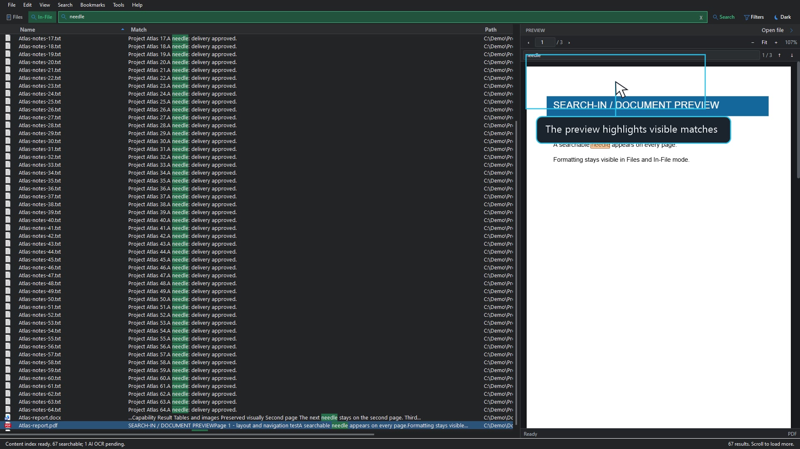

01 / GET SET UP1:00
Make yourself at home.
Setup, .NET, WebView2, and preparing an offline PC.
Setup simulationRead the steps
The name you half remember. The line buried in a document. Find both, then preview what matters. All in one focused Windows app.

No complicated routine. Start with local search. Add document indexing when you need to go deeper.
Install SEARCH-IN and let its engine prepare your file catalog. Use Files to search a name, extension, or path.
Watch the setup guideOpen Tools > Open Content Indexer. Choose your folder and select Start. SEARCH-IN reads available document text locally.
See your first indexSwitch to In-File, enter a distinctive phrase, and select a result. Read the matching snippet and navigate the preview.
Find your first matchIndex locally first. Review AI Pending, choose a supported vision provider, and approve the run. Only then are eligible files sent to that provider. Provider fees or limits may apply.
Four focused walkthroughs. Play right here. Follow the pointer. Try it for yourself.
Open the learning hubSetup, .NET, WebView2, and preparing an offline PC.
Pick a folder, index locally, and explore optional AI OCR.
Search names, filter types, and narrow the directory.
Search document text and jump between visible matches.
1080p recordings. Silent, with captions and on-screen guidance. Synthetic demo files only. The setup chapter is a labeled simulation; the other three show the real app. The AI demo makes no provider request.
Inspect the file beside your search results, whether you found its name or the words inside it.
Showing all 8 preview categories.
PDF pages, Word layouts, formatted RTF, and basic spreadsheet and slide content.
Everyday images, animated GIFs, supported Photoshop composites and PDF-compatible AI files.
Readable text, syntax-highlighted source and configuration files, Markdown, and subtitles.
Play supported media in place. Codec availability depends on Windows and WebView2.
Check archive contents without extraction, or inspect a read-only hex view.
Read supported EPUB chapters or browse embedded comic-book image pages.
Inspect supported geometry with orbit and zoom. External textures are not loaded.
See a font specimen without installing it, or read supported MusicXML scores.
Format support has limits. Word layout is approximate; advanced Office features and some codecs are not supported. RAW, HEIC, TIFF, EPS, MOBI, and legacy Office renderers are not bundled. Check the complete format list
SEARCH-IN is free to use.
Download it. Make it part of your day.
Requires .NET 10 Desktop Runtime (x64) and Microsoft Edge WebView2 Runtime. Setup can obtain missing runtimes with internet access. For an offline PC, bring the official standalone runtime installers first. App packages are currently unsigned; Windows may show a SmartScreen warning. See the setup guide.
SEARCH-IN is free to use, but it is not open source. The public GitHub repository provides downloads, documentation, demos, and update information. Application and engine source code remain private. Optional AI providers may charge for usage.
Local search, indexing, and previews stay on your computer. AI OCR is optional. Only after you choose a provider and approve an AI run are eligible files sent to that provider. This website has no analytics or sign-in.
Files finds filenames and paths in the engine's catalog. In-File finds text inside documents you have indexed with the Content Indexer. Both modes share the preview pane.
No. SEARCH-IN runs independently. It needs its included engine, the .NET Desktop Runtime, and WebView2 for the embedded viewer, not another search or preview app.
SEARCH-IN is the new name for this project. Existing LOCALOCR 1.x installations remain separate. Installing SEARCH-IN does not silently convert or delete LOCALOCR databases or credentials.
SEARCH-IN 2.1.0.103 supports in-app update checks and downloads. A quiet download indicator appears when an update is available. Open it to review and download the update, then choose when to install.